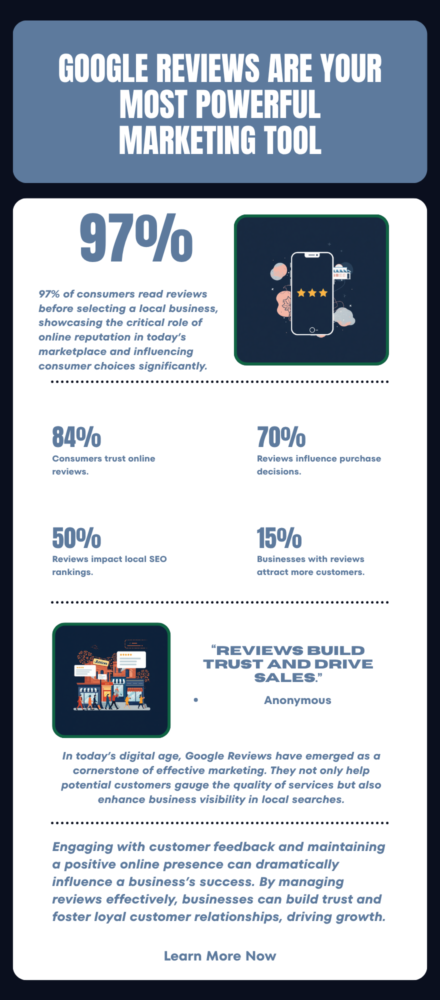
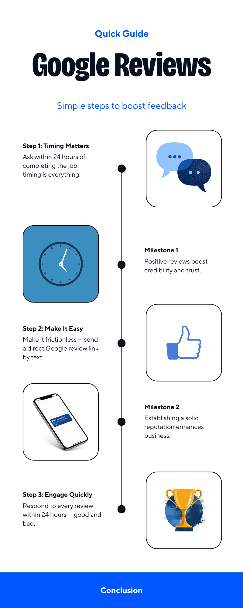

When a homeowner in Sterling Heights needs a plumber at 7pm on a Thursday, they don't ask a neighbor. They open Google, type "plumber near me," and start reading reviews. The business with the most recent, highest-rated reviews gets the call. The one with three reviews from 2021 and no responses gets scrolled past.
This happens hundreds of times a day across Oakland, Macomb, and Wayne County. Most trade business owners have no idea how many jobs they're losing to it — because the customer who moved on never tells you they moved on.
The Numbers Are Not Small
The data from 2026 makes the stakes clear. 97% of consumers read reviews before choosing a local business — and that number has held consistently high for several years running. What's changed is the urgency around recency:
73% of consumers only trust reviews from the last 30 days.
A five-star review from October 2024 might as well not exist for a customer searching today.
That single statistic is the reason a "set it and forget it" approach to reviews stops working. A business that collected 20 great reviews in 2023 and hasn't actively requested one since is losing trust with every passing month — even if the work quality hasn't changed at all.
The expectations around ratings have also tightened sharply. 31% of consumers in 2026 will only use a business with 4.5 stars or more — nearly double the 17% who said the same thing just one year ago. A business that was considered acceptable in 2025 can now be seen as a risk by nearly a third of potential customers.
Why Google Specifically
There are dozens of review platforms — Yelp, Facebook, Angi, HomeAdvisor, Nextdoor — but Google dominates in a way that makes the others secondary for most trade businesses.
Google hosts 71% of all online reviews in 2026.
81% of consumers go to Google specifically when evaluating a local business.
More importantly, Google reviews now feed directly into how visible your business is in local search results. Review signals — quantity, recency, rating, and whether you respond — account for roughly 16% of how Google ranks businesses in the local map pack. That's the three-business listing that appears at the top of search results when someone looks for a trade near them.
Getting into that top three is worth more than any paid ad for a local trade business. It's the first thing a customer sees, it carries Google's implicit endorsement, and it's free. Reviews are one of the primary levers you can pull to get there.
The Response Gap Nobody Talks About
Here's the statistic that surprises most business owners when they see it: only 5% of businesses respond to their online reviews — despite 89% of consumers expecting a response.
That gap is your opportunity. Responding to reviews is one of the highest-return activities available to a local business, and almost nobody is doing it consistently.
Businesses that respond to all reviews earn up to 18% more revenue.
97% of review readers also read the business's responses — responses are seen by far more people than just the original reviewer.
Responding to a negative review is especially powerful. 45% of consumers say they're more likely to visit a business after seeing it handle a negative review professionally. A thoughtful response to a complaint does more for your reputation than ten five-star reviews that go unanswered, because it shows future customers how you behave when something goes wrong.
What Most Trade Businesses Are Getting Wrong
The problem isn't that trade business owners don't care about reviews. Most of them care a great deal. The problem is that getting a review requires the customer to take an action — and most customers, even very satisfied ones, won't take that action unless you ask them directly and make it easy.
78% of consumers were asked to leave a review in the past year, and 83% of those actually did. The ask works. The majority of businesses just never make it.
Timing matters as much as asking. The window for a review request is narrow: within 24–48 hours of completing a job, while the experience is fresh. A follow-up text a week later, when the customer has moved on to other things, converts at a fraction of the rate.
Three Steps to Start Getting More Reviews This Week

None of this requires special software or a marketing budget. It requires a system — a repeatable habit you build into the end of every job.
Step 1 — Ask within 24 hours. The moment a job is done and the customer is satisfied, that's the window. Don't wait for the invoice to clear. A simple text message: "Thanks for letting us take care of this for you. If you have a moment, we'd really appreciate a Google review — it helps other homeowners find us." That's it.
Step 2 — Send a direct link. Don't make the customer find your Google listing themselves. Get your Google review link from your Google Business Profile and include it in every follow-up message. Removing that one step of friction dramatically increases follow-through.
Step 3 — Respond to every review within 24 hours. Good reviews, bad reviews, three-word reviews — respond to all of them. Thank customers by name when you can. Address complaints calmly and specifically. Make it clear that a real person is paying attention. That consistency builds trust with every future customer who reads your listing.
The Automation Option
If you're running a busy operation, building this habit manually across every job is easier said than done. This is exactly why we built the Google Review Follow-Up system into our Tier 2 service offering.
It's not complicated technology. It's a simple automated follow-up that sends your review request at the right moment, with your direct Google link, so the ask happens consistently — even on the weeks when you're buried in jobs and the last thing on your mind is sending a follow-up text.
The businesses winning in local search in 2026 aren't the ones with the biggest marketing budgets. They're the ones with a steady flow of recent reviews, a rating in the 4.4–4.9 range, and a consistent habit of responding. That's achievable for any trade business in this area — it just has to become part of how you operate.
Want This Running Automatically?
Our Google Review Follow-Up system is included in the Tier 2 Business Presence Package, or available as a standalone add-on. No subscriptions. No monthly platform fees. Just a system that works while you're on the job.
Talk to Us About It →